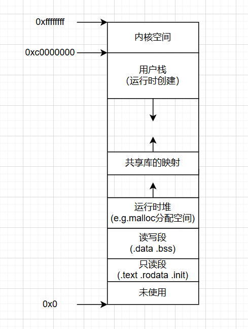
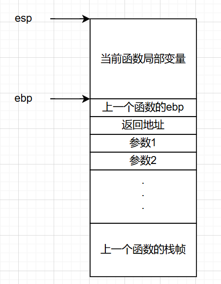
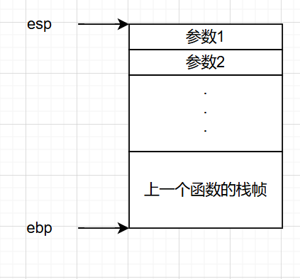
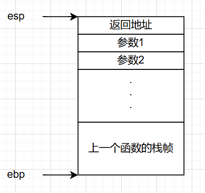
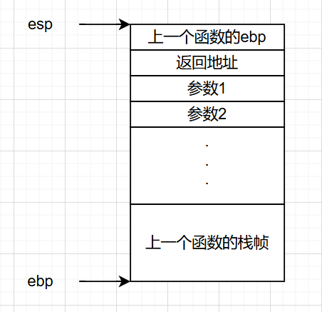
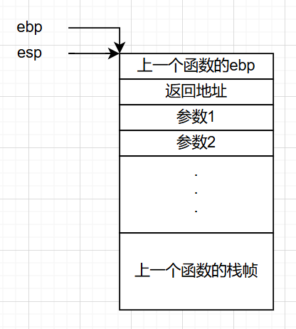
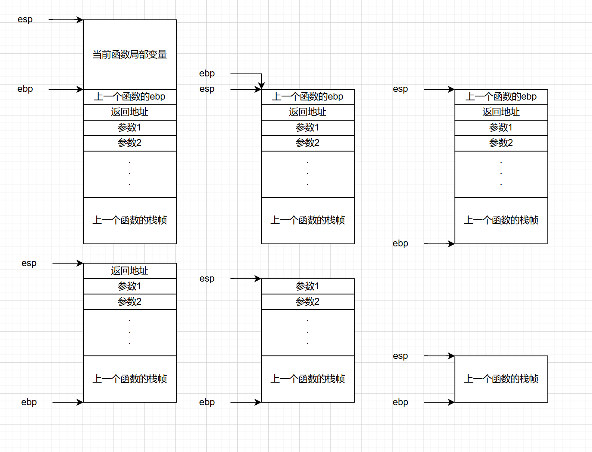

栈与函数
2024秋UCASCTF小组binary方向汇编部分讲义之一。
- 发布
- 阅读
- 05 分钟
- 语言
- ZH
- 分类
- binary
汇编中的栈和函数
linux可执行文件装载过程
程序文件不等于进程。当一个程序运行时，操作系统会先把程序文件从磁盘中映射到内存中。程序文件中的段会被对应的映射到内存中对应的段（比如程序文件中的 .text 段映射到内存中的 .text 段）。这个过程中有对应的规则，在现在的x86架构的linux中，每个进程都有一个独立的虚拟内存空间，大小为 4GB ，操作系统会将该进程用到的内存再次映射到物理内存，所以针对一个进程，我们只需关注其进程空间的内存分布即可，操作系统会帮我们管理物理内存。

其中，读写段和只读段都是有程序文件本身映射到内存中得到的，而剩下的部分则是随着程序的运行，由进程创建的。我们调试时看到的内存就是进程空间中的内存，在 pwndbg 中，你可以用 vmmap 查看程序内存布局和权限情况（读写执行权限）。
函数栈帧
我们想要在一个函数中调用另一个函数，但每个函数都会用到相同的寄存器比如 esp ebp eax eip 等等，我们如何在调用时保存上一个函数的状态呢？我们需要一种 FILO （先进后出）的数据结构（因为先调用的函数最后恢复状态），就是栈。
在一个进程中，所有的函数都共用一个栈，即上图中的用户栈，正在调用的函数越多，栈越大。其中一个函数在栈上保存信息的那部分栈，叫做该函数的栈帧。
esp 叫栈顶寄存器，总是指向当前函数栈帧的栈顶； ebp 叫栈基址寄存器，总是指向当前函数栈帧的栈底。当然，由上面的图可知，栈顶在地址上总是比栈底要小的，即栈向低地址方向增长。

上图中 esp ebp 指向的地址即为当前这两个寄存器的值。
函数的序幕与尾声
先复习一下这几条指令：
push可以接一个立即数或一个寄存器操作数，将一个值压入栈中。 例：push eax等效于sub esp,4; mov [esp],eaxpop接一个寄存器，将栈中的值弹入寄存器中。 例：pop eax等效于mov eax,[esp]; add esp,4leave不接任何东西，在一个函数结束的时候调用。 例：leave等效于mov esp,ebp; pop ebpcall调用一个函数，后面接一个地址（或者说是标签）。 例：call printf等效于push eip; jmp printfret从一个函数中返回到原来的执行位置，什么也不接。 例：ret等效于pop eip
若你用反汇编工具观察过几个C语言程序，你会发现几乎每个函数都有这样的开头和结尾：
push ebp
mov ebp,esp
sub esp,40h ;这里的立即数取决于函数的局部变量
; ...
leave
ret
这几条指令都与栈帧的管理有关。此外，用于调用函数的 call 也与函数的栈帧有关。
下面我们以图示的形式演示x86架构linux系统程序 函数的序幕与尾声 （上面那段代码） 干了什么，对栈有什么改变。
函数调用之前，应该已经存在这样的结构：

这里的参数1、参数2等是即将被调用的函数的参数，他们在该函数被调用之前就已经被倒序压入栈中（通过 push 指令）。ebp现在还指向上一个函数的栈底。
当调用该函数时，即执行 call func 指令时，函数的返回地址被压入栈中。这个地址指导着：当被调用函数结束后，主函数（调用者）应该执行哪条指令（因为此时 eip 早已改变）。

当进入该函数时，即执行 push ebp 时，原来函数的 ebp 值被压入栈中，这是为了该函数调用结束后 ebp 能恢复到原来的值。栈的结构如下：

接着是一个 mov ebp,esp 指令，将 ebp 的值改为栈顶地址，目的是以当前栈顶为基址，开辟一个新的栈帧。

然后 sub esp,40h ，这里开辟了一个 0x40 字节大小的栈空间，用来储存当前函数的局部变量。
在函数内部执行完一些操作后，我们开始进入 函数的尾声 。
leave 指令相当于 mov esp,ebp; pop ebp ，即将栈顶移至栈帧基址处，相当于销毁栈帧，再将原来储存在栈中的 ebp 的旧值（主函数的栈帧基址）恢复到 ebp 寄存器中。
最后，ret 指令，即相当于 pop eip ，将函数的返回地址弹出到指令寄存器中，下一步将执行主函数被调用前的下一条指令，栈的布局恢复到函数被调用前：
至于栈中的参数1、参数2等，则由主函数在调用前压入栈中。当然，如果是x64架构的linux，前六个参数用寄存器传参，分别为 rdi rsi rdx rcx r8 r9 ，剩余的参数则还由栈传递，即会被先压入栈中。（这也是为什么x64栈溢出会用到ROP技术，可以自行查询）
最后附上一张各种状态下栈帧结构图
